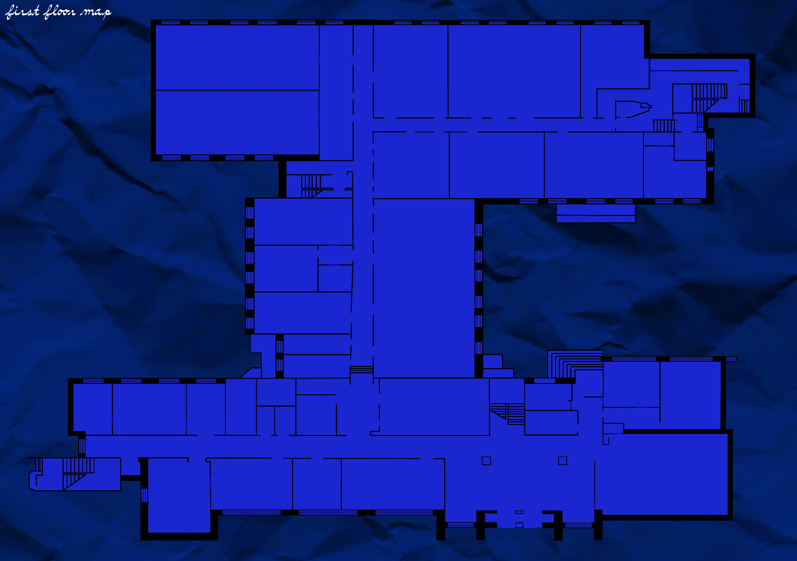

Спікер
Андрій Лотарєв
Директор навчально-наукового інституту міжнародної освіти
https://www.krok.edu.ua/ua/pro-krok/spivrobitniki/lotarev-andrij-grigorovichЗабудь про нудні консультації! За 3 хвилини бліц-тесту International Business IQ ти дізнаєшся Хто ти: Так, ти – лідер, але який?! Куди йти: Двері відчинені! Обміни, стажування, стипендії, міжнародне ком’юніті. Обирай! Як діяти: Твій маршрут до крісла топ-менеджера вже в нас. Отримай свій план!
Користуйтеся картою, щоб дістатися до цієї аудиторії


Коротко про те, для кого ця локація буде найцікавішою та чим вона може бути корисною.
Експерти, викладачі та практики, які поділяться досвідом, розкажуть про навчання, кар’єрні можливості та особливості освітніх програм.
Директор навчально-наукового інституту міжнародної освіти
https://www.krok.edu.ua/ua/pro-krok/spivrobitniki/lotarev-andrij-grigorovich
Завідувачка кафедри міжнародного бізнесу
https://www.krok.edu.ua/ua/pro-krok/spivrobitniki/prokhorova-marina-eduardivnaОзнайомтеся з освітніми програмами та знайдіть напрям, який найбільше відповідає вашим інтересам, цілям і майбутній професії.
Тут про атмосферу попередніх заходів, активності учасників і те, як проходила локація в минулі роки.